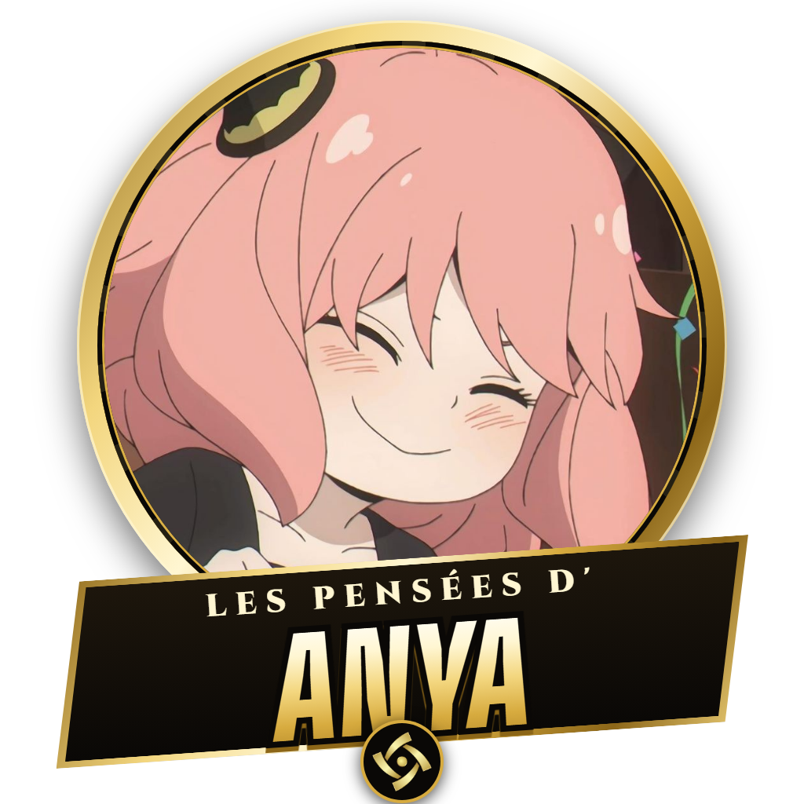

Dossier top secret · les règles
Waku waku !
Règle n° 1
On a posé une question au public.
Ses huit réponses les plus données sont cachées. À vous de les retrouver.
Règle n° 2
Une idée ? Dites-la à voix haute.
Le présentateur donne la main à celui qui parle.
Joueur 1
Joueur 2
Règle n° 3
Bonne réponse : elle s'affiche avec ta photo.
Mauvaise réponse : un strike. Au troisième, tu sors de la manche.
Hors manche
Règle n° 4
Les points restent secrets jusqu'à la fin de la manche.
Puis ils tombent un par un. La réponse la plus donnée rapporte le plus.
Trois manches · les strikes repartent à zéro
À vous de lire dans leurs pensées.

Les Pensées d'Anya · les règles